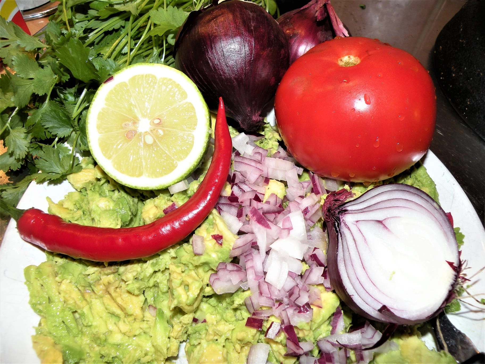
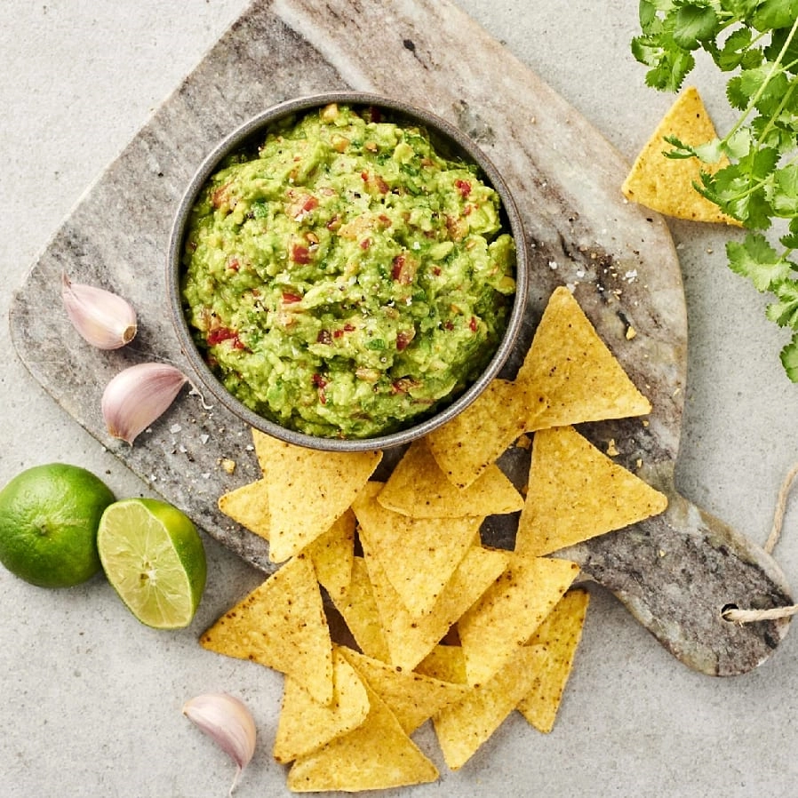
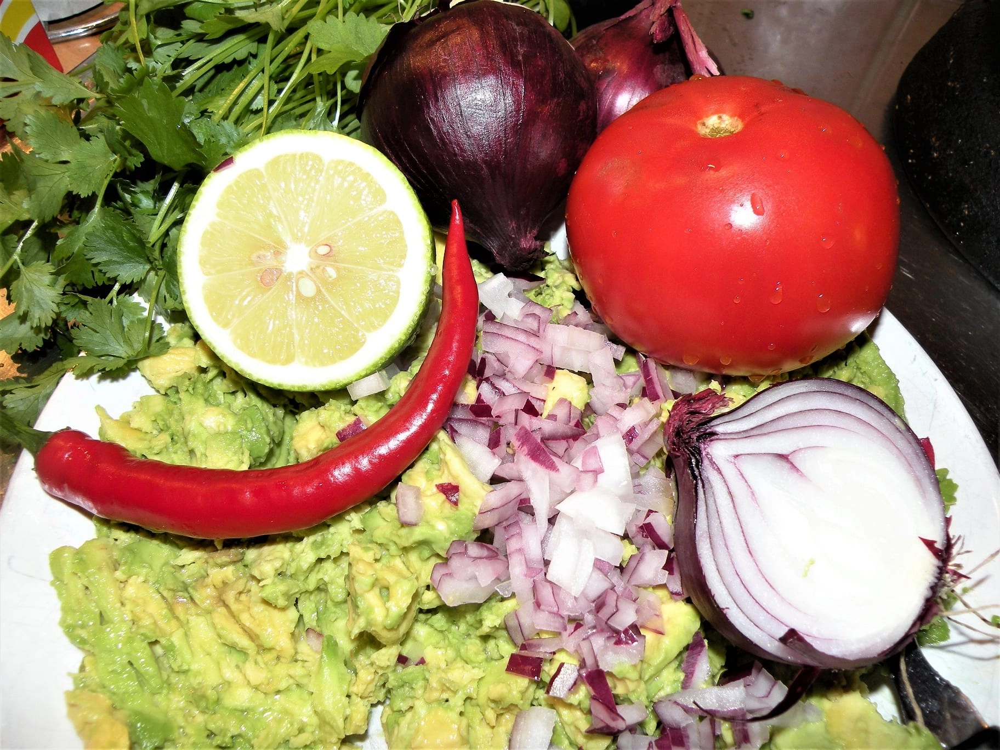
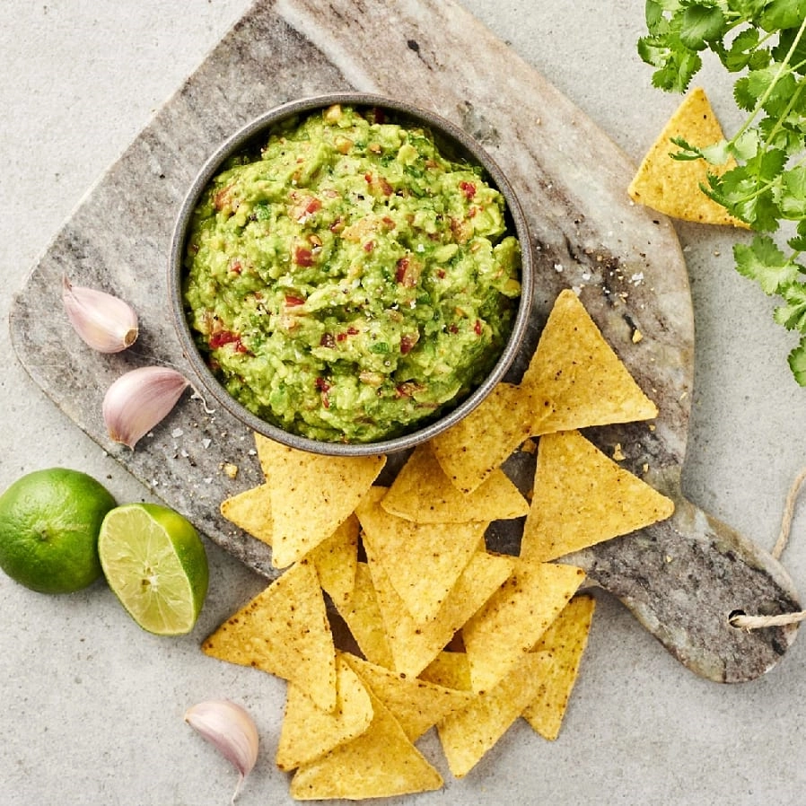

- Dela, kärna ur och gröp ut köttet ur avokadona.
- Skär dem i små bitar eller mosa slätt.
- Blanda samman alla ingredienser och krydda med salt och peppar.
- Låt stå och dra i kylen en stund före servering.
Passande maträtter:
- Nachos med tillbehör
- Tacos, mjuka eller hårda
- Burritos
- Helt enkelt sleva i sig